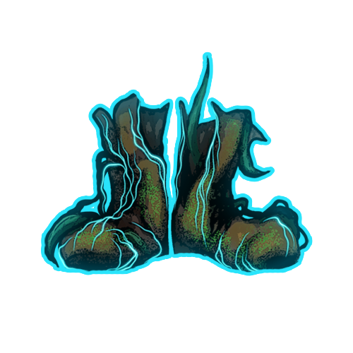
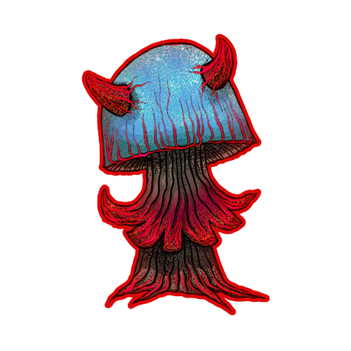
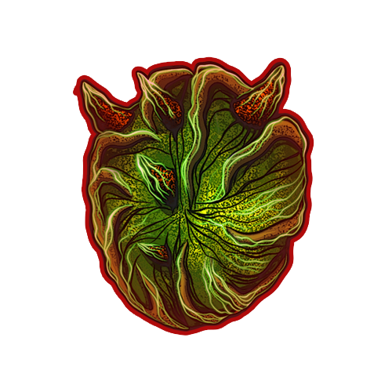

Artifacts
16 artifacts with three effect types: Stat Boost (a fixed bonus to a stat), Scaling Passive (a bonus stat scales another stat), and Event Triggered (an action is triggered by a game event). An artifact marked Unique can only be found once per run. Currently, all artifacts have the rarity Common.
Bloom of Renewal Common
- On every level-up: heals 30 HP
Critical Mind Common
- Crit Damage +30 %
Forest Tribute Common
- When picked up (one-time): +100 Mycelium
- When picked up (one-time): +5 Biomass
- When picked up (one-time): +1 Amber
Fortune Spore Common
- Crit Chance +15 %
Healing Dash Common Unique
- On every dash: heals 3 HP
Heartroot Common
- Max HP +50
Jumper Common
- Additional Dash Charge +1
Last Breath Fury Common
- While HP < 30 %: Damage +100 %
Automatically removed again once your HP rises back above the 30%
threshold.
Lucky Bark Common Unique
- Block Chance increases by 10 % of your bonus Luck
Meat Detector Common
- Biomass Bonus Chance +15 %
Mushroom Basket Common
- Mycelium Bonus Chance +15 %

Old Shoes Common- Move Speed +5 %
Despite the name, this is a positive effect.

Run & Gun Common Unique- Damage increases by 10 % of your bonus Move Speed
Synergizes with all Move Speed bonuses (e.g. Old Shoes, Ensa perksets).
Slimy Snail Common Unique
- Move Speed -20 %
- HP Regeneration +1 HP/sec
Trade-off: noticeably slower, but a noticeable steady heal in return.
Spore Dash Common Unique
- On every dash: +2 Mycelium

Thorn Shield Common Unique- When taking damage: reflects 10 % of the damage back to the attacker
- When blocking: reflects 100 % of the damage back to the attacker